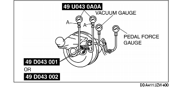

Power brake unit inspection
- • The following inspection methods are simple inspection methods to judge the function of the power brake unit.
- • If there is any malfunction in the power brake unit, replace the power brake unit as a single unit.
Without Using SST
Operation inspection
1. With the engine stopped, depress the pedal several times.
2. With the pedal depressed, start the engine.
3. If the pedal moves down slightly immediately after the engine starts, the unit is operating.
Vacuum function inspection
1. Start the engine.
2. Stop the engine after it has run for 1 to 2 min.
3. Depress the pedal with normal force.
4. If the first pedal stroke is long and becomes shorter with subsequent strokes, the unit is operating normally.
- • If a problem is found, inspect for damage to or improper installation of the check valve and vacuum hose. After repairing, inspect again.
Vacuum loss function inspection
1. Start the engine.
2. Depress the pedal with normal force.
3. With the pedal depressed, turn off the engine.
4. Hold the pedal down for approx. 30 s.
5. If the pedal height does not change, the unit is operating.
Using SST
Pre-inspection preparation
1. Install the SSTs (49 D043 001 and 49 D043 002) to the master cylinder as shown in the figure.

- • When installing the SSTs (49 D043 001 and 49 D043 002) to the master cylinder, use the SST (49 0259 770B) or any commercially available flare nut wrench.
2. Connect the SSTs, vacuum gauge, and pedal depression force gauge as shown in the figure to bleed the air from the SSTs and brake line.(Bleed the air from the SSTs using air bleed valve A.)

Checking for vacuum loss (loaded condition)
1. Start the engine.
2. Depress the brake pedal with a force of 200 N {20.4 kgf, 44.9 lbf}.
3. Stop the engine when the vacuum gauge reading reaches 68 kPa {510 mmHg, 20.1 inHg}.
4. With the engine off, observe the vacuum gauge for 15 s.
5. If the gauge has dropped 3.3 kPa {25 mmHg, 1.0 inHg} or less, the unit is operating normally.
Lack of hydraulic pressure inspection
1. With the engine stopped (vacuum 0 kPa {0 kgf/cm2, 0 psi}), apply the indicated pedal force and if the fluid pressure is within the specification, the unit is operating normally.
Power brake unit fluid pressure when pedal depressed at 200 N {20.4 kgf, 44.9 lbf}Hydraulic pressure inspection
1. Start the engine. Depress the brake pedal when the vacuum reaches 66.7 kPa {500 mmHg, 19.7 inHg}.
2. At this time, apply the indicated pedal force and if the fluid pressure is within the specification, the unit is operating normally.
Power brake unit fluid pressure when pedal depressed at 200 N {20.4 kgf, 44.9 lbf}